1. UML 개요와 기본 다이어그램
가. UML(Unified Modeling Language)의 정의
기존에는 학자마다 객체지향 모델링을 서로 다른 방식으로 표현해 왔다. 이에 부치(Booch)·럼바(Rumbaugh)·야콥슨(Jacobson) 세 학자가 표기법 통일을 주도(1994년 연구 시작 → 1997년 발표)하여, 개발자와 사용자 간 표준화된 의사소통 수단을 제공하게 되었다.
나. UML의 특징
- 단순한 표기법이 아니라, 사용하는 형식과 각 표기에 의미를 가진 언어
- 개발자 간 의사소통을 원활히 하며, 반복적·점진적인 객체 개발 프로세스를 지원
- 개발 규모·프로세스·언어에 관계없이 적용 가능(특정 방법론이나 프로세스에 종속되지 않음)
- 객체지향 개발만을 위한 것이 아니라 통합 모델링 언어이므로 다른 모델링에도 활용 가능
※ 1997년 OMG가 UML 1.1을 표준으로 채택한 이후 1.3~1.5를 거쳐, 2005년 UML 2.0이 승인되었고 현재는 2.2 이상 버전이 사용된다.
다. UML의 구성: 5가지 View
| View | 내용 |
|---|---|
| Use Case View | 요구분석 단계에서 사용되는 관점으로, 자세한 내부설계에는 사용되지 않음. 시스템을 사용하는 이벤트·기능 위주로 표현 |
| Logical View | 객체 모델을 의미하며 클래스 다이어그램으로 나타냄 |
| Process View | 동적 모델을 의미하며 Sequence 다이어그램과 Collaboration 다이어그램으로 나타냄 |
| Component View | 대규모 시스템을 서브시스템으로 나눌 때 사용 |
| Deployment View | SW 서브시스템이 전체 시스템을 구성하는 HW의 어느 부분에 배치될 것인가를 표현 |
라. UML 다이어그램의 분류(정적·동적 모델링)
| 구분 | 다이어그램 | 내용 |
|---|---|---|
| 정적 모델링 (구조 모델링) | 클래스(Class) Diagram | 시스템 내 클래스들의 정적 구조를 표현. 클래스는 객체들의 집합으로 속성(Attribute)과 동작(Behavior)으로 구성 |
| 객체(Object) Diagram | 클래스의 여러 인스턴스 대신 실제 클래스를 사용해 표현. 클래스 다이어그램과 동일 표기법이나 객체 이름에 밑줄 표시 | |
| 컴포넌트(Component) Diagram | 코드 컴포넌트에 바탕을 둔 코드의 물리적 구조를 표현. 실질적인 프로그래밍 작업에 사용 | |
| 배치(Deployment) Diagram | 시스템 하드웨어·소프트웨어 간의 물리적 구조, 컴퓨터와 디바이스 간 관계를 표현. 컴포넌트 간 종속성도 표현 | |
| 동적 모델링 | 유스케이스(Use Case) | 외부 행위자(Actor)와 시스템이 제공하는 여러 유스케이스의 관계를 표현. 유스케이스 뷰를 다룸 |
| 순차(Sequence) | 여러 객체 사이의 동적 협력을 표현. 객체 간 메시지를 보내는 순서를 시간·순서 중심으로 표현 | |
| Collaboration | 객체 간의 연관성을 표현하며, 내용(구조적 관계)이 중요한 경우에 이용 | |
| 활동(Activity) | 행위(Activity)의 순서적 흐름을 표시. 수행된 활동 상황을 설명하기 위해 사용 | |
| 상태(State) | 클래스의 객체가 가질 수 있는 모든 가능한 상태를 나타냄 |
마. UML의 관계(Relationship) 개요
UML에서 클래스 간에는 4가지 관계가 존재한다: 의존관계(Dependency), 연관관계(Association), 일반화(Generalization), 실체화(Realization)이다. 일반화는 부모 클래스(Superclass)가 자식 클래스(Subclass)보다 더 일반적인 개념을 나타내는 상속 관계이다.
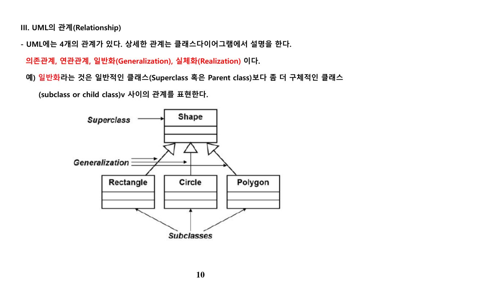
바. Use Case Diagram의 구성요소 관계
| 관계 | 설명 |
|---|---|
| 연관(Association) | Use Case와 Actor의 관계를 실선으로 표현(연결되어 있음) |
| 확장(Extend) | 기본 Use Case 수행 시 특별한 조건을 만족할 때만 수행하는 Use Case(옵션에 해당) |
| 포함(Include) | 시스템의 한 기능이 별도의 기능을 포함(점선). 예) 상품 주문·확인 시 로그인 기능을 포함하는 경우 |
| 일반화(Generalization) | 하위 Use Case·Actor가 상위 Use Case·Actor의 기능·역할을 상속받는 관계 |
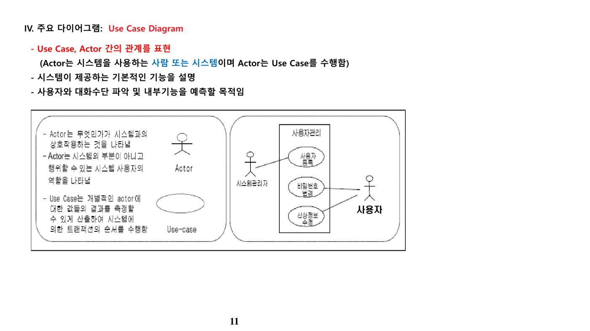
사. Use Case 스테레오타입(Stereotype)
| 스테레오타입 | 분류 | 설명 |
|---|---|---|
| <<include>> | 관계 | 하나의 유스케이스가 특정 시점에 반드시 다른 유스케이스를 실행하는 포함 관계 |
| <<extend>> | 관계 | 하나의 유스케이스가 특정 시점에 다른 유스케이스를 실행할 수도, 안 할 수도 있는 확장 관계 |
| <<interface>> | 클래스 | 모든 메소드가 추상메소드이며 바로 인스턴스화할 수 없는 클래스(추상메소드·상수로만 구성) |
| <<entity>> | 클래스 | 정보를 저장하는 객체. 유스케이스 처리흐름 중 기억장치에 저장되어야 할 정보를 표현하는 클래스 |
| <<boundary>> | 클래스 | 시스템과 외부 경계에 걸친 클래스. user interface(사용자 상호작용), system interface(외부 시스템 연동), device interface(디바이스·센서 연동)로 구분 |
| <<control>> | 클래스 | 특정 객체에 종속되지 않은 기능을 모델링. Entity 클래스의 연산·계산 수행, Boundary 클래스로 결과 반환 등 처리흐름을 제어·조정하는 클래스 |
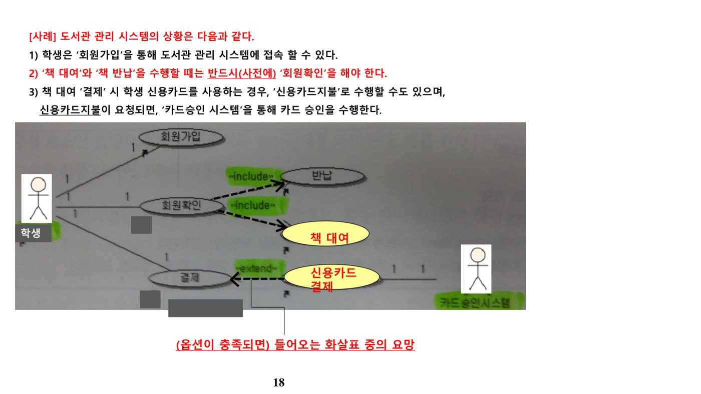
아. Use Case Diagram 사례 연습(도서관 시스템)
도서 등록·대출·반납 기능을 중심으로 작성된 유스케이스 다이어그램에서는, 표현하려는 내용이 아니라 표기법 자체가 올바른지를 묻는 문제가 출제된다. 예를 들어 "사서"와 "사용자"가 일반화(상속) 관계로 그려져 있다면, 이는 두 액터가 로그인 화면을 공유하는 것이 아니라 상속 관계를 표현한 것이므로 표기법 오류가 될 수 있다.
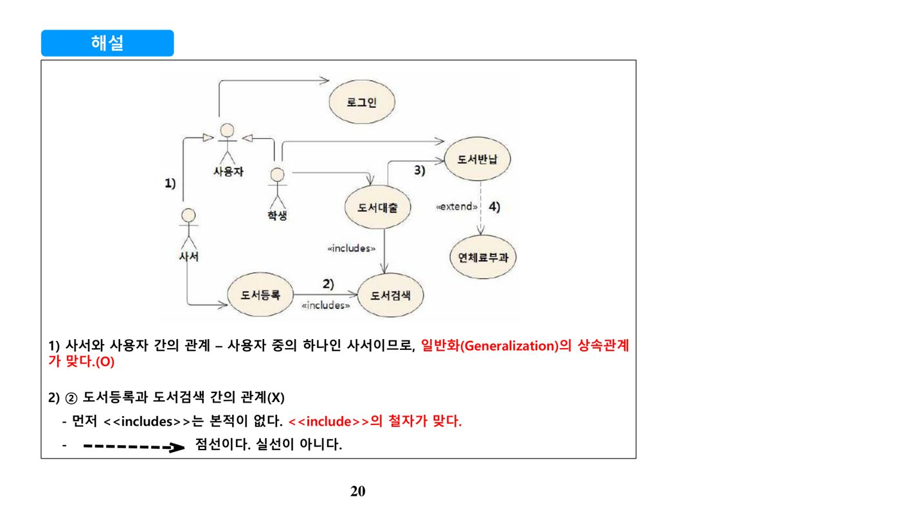
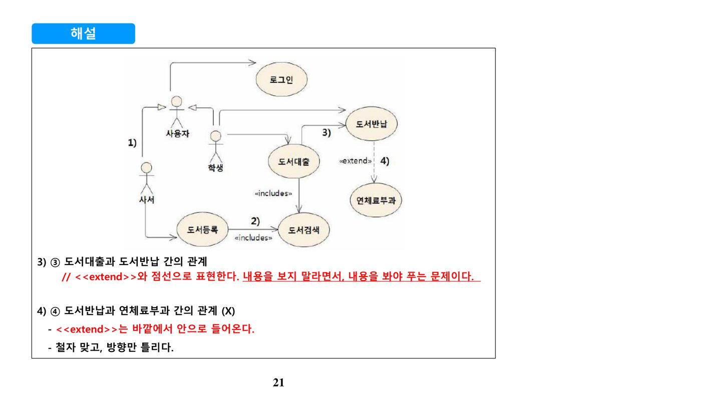
자. 시퀀스 다이어그램(Sequence Diagram)의 구성요소
| 구성요소 | 설명 |
|---|---|
| 액터(Actor) | 시스템과 상호작용하는 사용자·외부 시스템 |
| 활성객체(Object) | 메시지 상호작용에 참여하는 주체. 다이어그램 윗부분에 위치하며 왼쪽→오른쪽으로 배열 |
| 메시지(Message) | 객체 사이에 송·수신하는 메시지로, 발생 순서에 따라 위→아래로 표현. 객체는 자기 자신에게도 메시지를 전송할 수 있음(실선: 호출메시지, 점선: 답신메시지) |
| 제어사각형(Control Rectangle) | 객체가 제어를 가지고 있음, 즉 정보를 처리 중이거나 다른 정보를 기다리고 있음을 표시 |
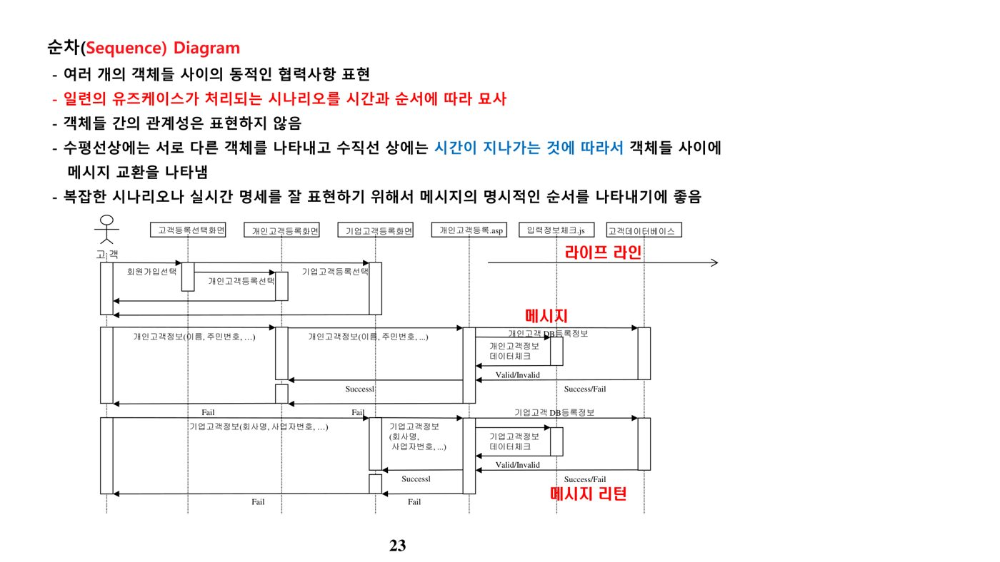
2. 클래스 다이어그램과 그 외 UML 다이어그램
가. 클래스 다이어그램(Class Diagram)의 기본 구조
클래스 다이어그램은 Class, Interface, Collaboration 간의 관계를 나타내며, 객체 지향 시스템 모델링에서 가장 공통적으로 쓰이는 다이어그램이다. 클래스는 상단에 클래스명, 중단에 속성(Attribute), 하단에 오퍼레이션(Operation)을 표기하며, +는 Public, -는 Private 멤버를 의미한다.
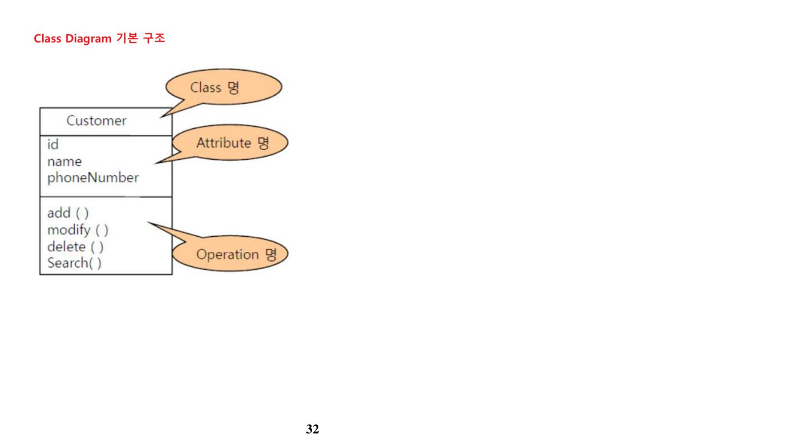
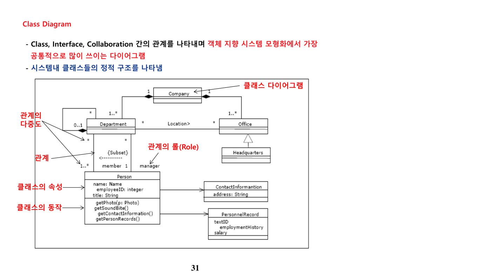
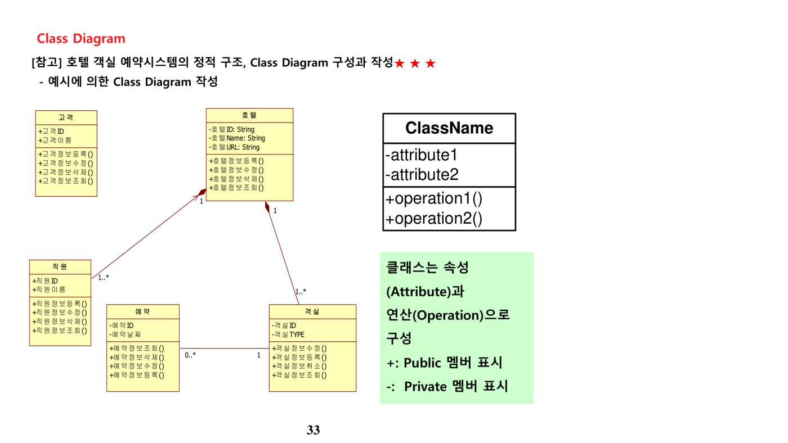
나. 클래스 간 관계 유형
| 관계 유형 | 설명 |
|---|---|
| 연관관계 (Association) | 두 클래스 간 서로 연관을 가지고 있음을 의미하는 가장 일반적인 "Has a" 관계. 다중성 표기(1:1개, 0..1:0또는1개, *:다수, 1..*:1개 이상) |
| 집합연관관계 (Aggregation) | 클래스 간 부분과 전체의 관계(예: 부서–직원). 부분 객체가 전체 없이도 독립적으로 존재 가능(속이 빈 마름모) |
| 복합연관관계 (Composition) | 집합연관관계와 같이 부분·전체 관계이나, 전체 클래스가 소멸하면 부분 클래스도 함께 소멸하는 강한 관계(예: 테이블–다리, 속이 찬 마름모) |
| 의존관계 (Dependency) | 한 클래스의 변화가 다른 클래스에 영향을 미치는 약한 관계(점선 화살표). 어느 시점에 다른 클래스를 "사용"할 때 발생 — 암기: "정의" |
| 상속관계 (Inheritance) | 클래스 간 상속관계("is a" 관계). 일반화(Generalization)를 의미하며 속이 빈 삼각형 화살표(▷)로 표기 |
| 인터페이스 실체화 (Realization) | 하나의 객체가 다른 객체(인터페이스)에 정의된 오퍼레이션을 실제로 구현하도록 지정하는 관계(예: 타자 기능 – 키보드) |
| 직접 연관 (Direct Association) | Association과 Directed Association의 차이는 화살표가 가리키는 navigability(방향성)로, 참조하는 쪽과 참조당하는 쪽을 구분 |
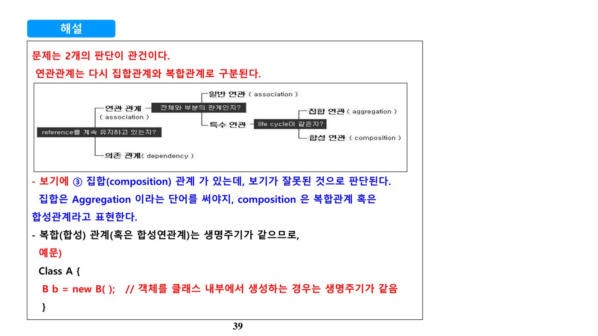
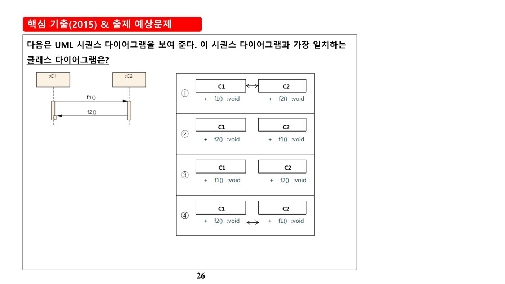
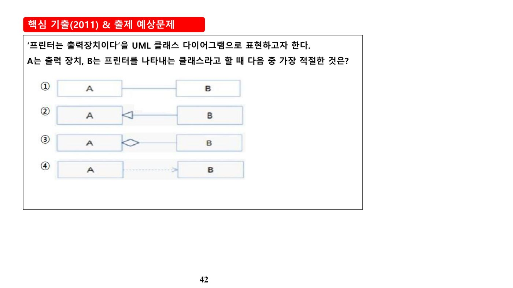
다. 활동 다이어그램(Activity Diagram)
활동 다이어그램은 시스템 내부 활동의 흐름을 나타내는 동적 뷰 다이어그램으로, 객체 간의 제어 흐름에 중점을 둔다. 시작점·활동·전이(화살표)·종료점으로 구성되며, 분기는 마름모(판단)로 표현하고 옆에 조건문을 표기한다. 병행 프로세스를 지원하기 위한 분할(Fork, 동시에 진행 가능한 상태로 분리)과 합류(Join, 분할된 흐름이 반드시 다시 합쳐짐) 개념이 있다.
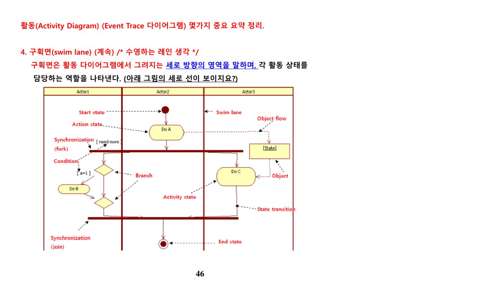
라. 상태 다이어그램(State Diagram)
상태 다이어그램은 객체가 가질 수 있는 모든 상태와 상태 간 전이(Transition)를 표현한다. 이벤트(Event)에 의해 상태가 전이되며, 작성 순서는 다음과 같다: ① 범위 파악 → ② 시작·종료 상태 파악 → ③ 객체가 가질 수 있는 상태 규명 → ④ 상태 변환 이벤트·액션·조건 도출 → ⑤ 최종 검증.
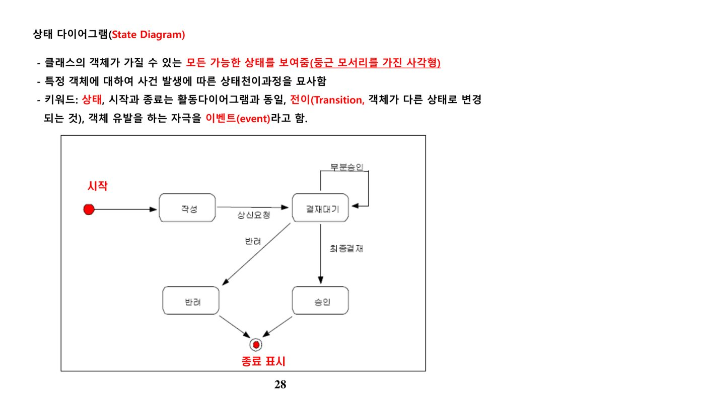
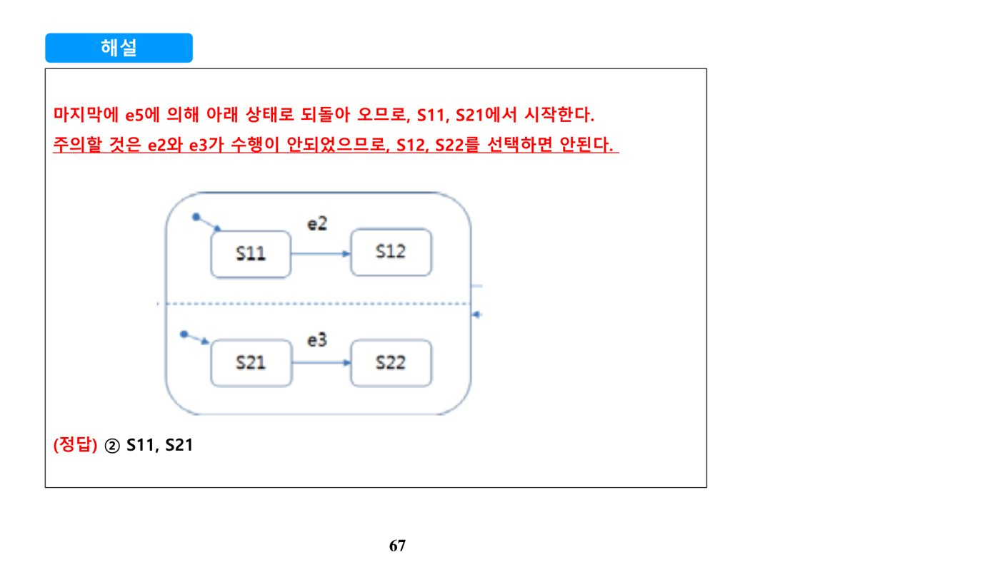
마. 시퀀스 다이어그램의 호출(Call) 문제
클래스 다이어그램을 시퀀스 다이어그램으로 표현할 때는 호출 방향이 반대로 뒤바뀌지 않도록 주의해야 한다. 예를 들어 "C1의 클래스 객체가 C2 클래스의 객체의 f() 메소드를 호출한다"는 문장은, 클래스 다이어그램에서는 f() 표기 위치가 반대로 보일 수 있어 혼동을 일으키기 쉽다.
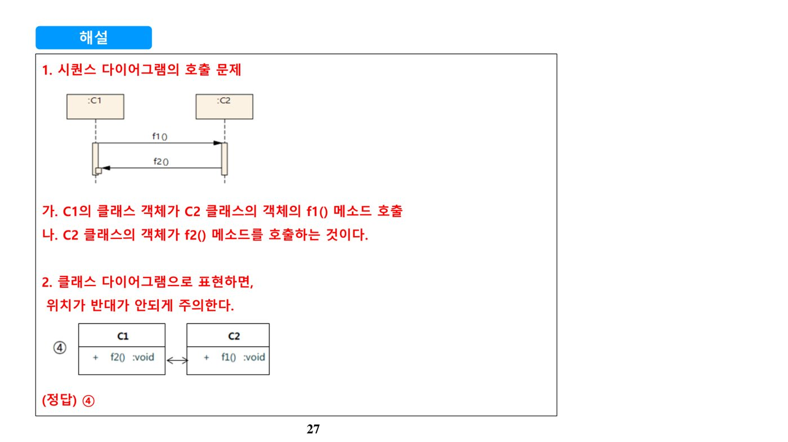
바. 컴포넌트(Component) 다이어그램과 배치(Deployment) 다이어그램
| 다이어그램 | 설명 |
|---|---|
| 컴포넌트(Component) Diagram | 시스템의 물리적 컴포넌트와 그 사이의 의존관계를 나타내는 다이어그램. 인터페이스는 소형 원(간단한 표현법)으로 표기 |
| 배치(Deployment) Diagram | 시스템이 분할된 서버 시스템의 배치 모습을 도식화. 시스템의 하드웨어와 소프트웨어의 물리적 구성, 실제적인 컴퓨터·디바이스 사이의 종속성을 나타냄(예: Client, Server 노드) |
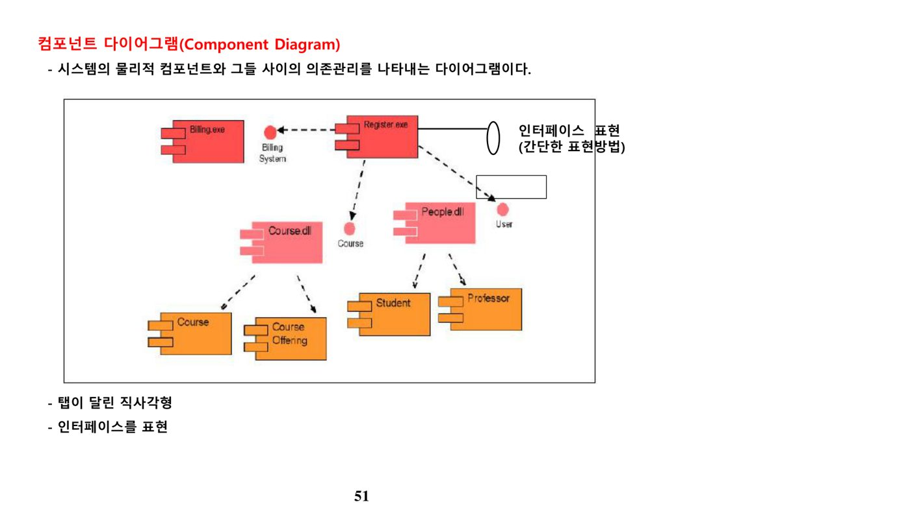
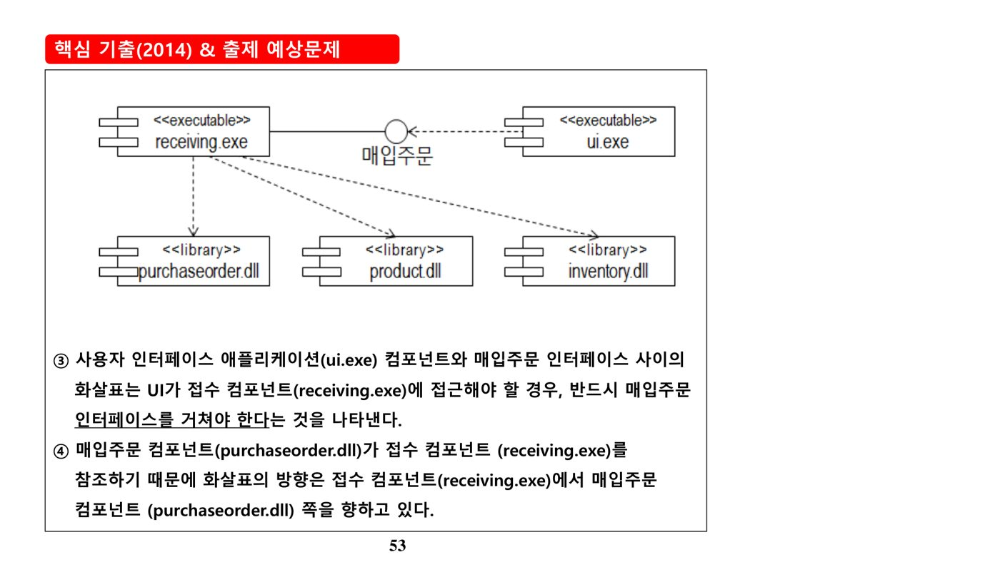
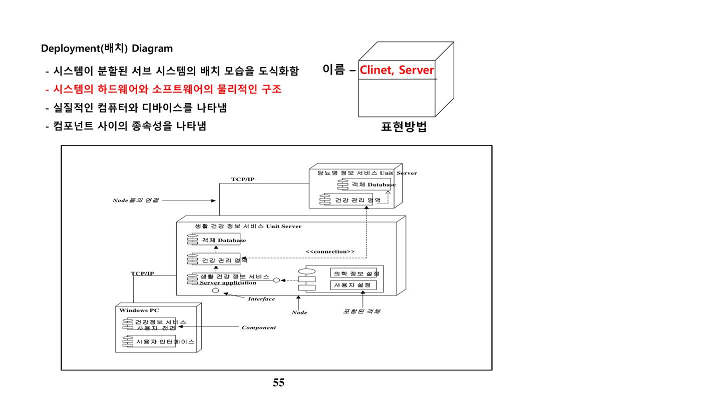
사. UML 다이어그램 전체 관계 정리
UML의 각 다이어그램은 독립적으로 존재하는 것이 아니라, 유스케이스에서 시작해 클래스·컴포넌트·배치 다이어그램으로 구체화되고, 순차·활동·상태 다이어그램으로 동적 행위가 보완되는 유기적 관계를 갖는다.
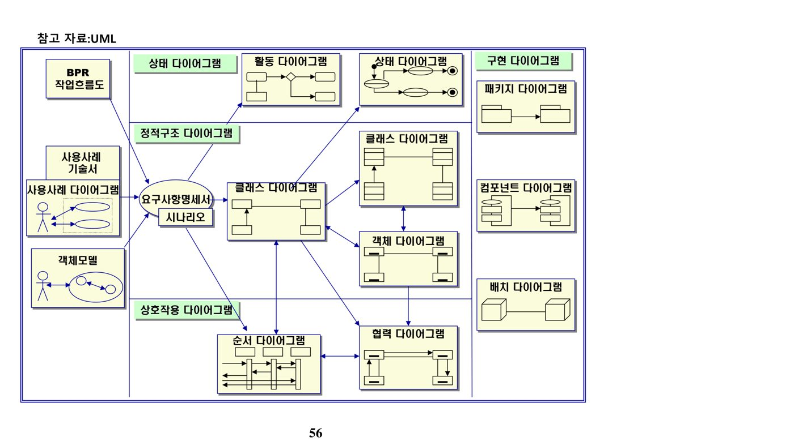
아. UML 확장 메커니즘과 UML 2.0
| 구성요소 | 설명 |
|---|---|
| 스테레오타입(Stereotypes) | 모델링 요소에 추가적인 의미를 부여할 수 있도록 해주는 메커니즘 |
| 제약사항(Constraints) | 모델링 요소에 제약을 명시함으로써 해당 요소를 더 명확하게 표현하도록 해주는 메커니즘 |
| 꼬리표 값(Tagged Values) | UML이 제공하는 속성 외에 추가 속성을 정의하는 메커니즘. {tag=value} 기호 사용 |
UML 2.0은 웹 기반 애플리케이션·SOA 등 신기술 등장으로 높은 자동화를 지원하는 UML 기반 툴의 필요성이 커지면서, 기존 표준(UML 1.x)을 더 정확한 방식으로 재정의한 버전이다.
| UML 1.x의 한계 | UML 2.0의 개선 |
|---|---|
| 컴포넌트 내부 아키텍처 표현 부족 | 아키텍처·인터페이스·컴포넌트·클래스의 내부 표현방법 강화(Composite-Structure Diagram의 포트/파트/커넥터) |
| MDA 기능 제한적 | Meta Model 표현 강화(MOF, UML, Profile), 실행속성기법 수용으로 분석·설계와 실제 구현 간 차이 극복 |
| 임베디드 시스템 표현 부족 | ITU-T SDL 개념 차용(Capsule: 프로토콜을 가진 클래스, Port: 클래스 간 연결 추상화) |
| 모델링 표현의 모호성 | MDD에 필요한 고급 자동화 구현 가능, Round-trip Engineering Simulation 지원 |
| 다이어그램 종류 제한 | 시퀀스·Statechart 다이어그램의 표현 방법 개선 및 다이어그램 추가 |
자. 타이밍 다이어그램(Timing Diagram)
타이밍 다이어그램은 UML의 상호작용(Interaction) 다이어그램 중 하나로, 시간에 따른 여러 대상(객체)의 상태 변화를 표현하는 데 주된 목적을 둔다.
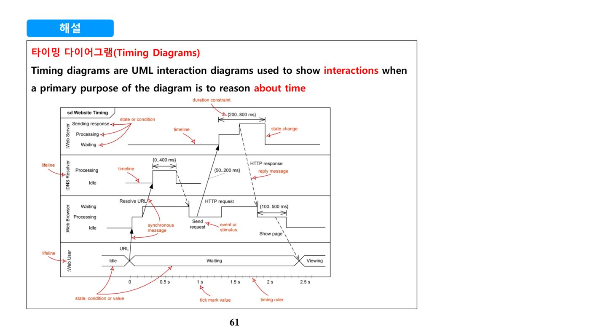
차. OCL(Object Constraint Language)
UML에서 클래스 객체에 대한 불변조건(Invariant), 연산에 대한 선행조건(Precondition)과 후행조건(Postcondition)을 표현하는 데 사용되는 언어가 OCL(Object Constraint Language)이다.
3. McCabe 순환 복잡도(Cyclomatic Complexity)
가. 정의와 특징
나. 복잡도 계산 공식
| 공식 | 설명 |
|---|---|
| V(G) = e − n + 2 | 제어 흐름 그래프 기반. e = 간선(Edge)의 수, n = 노드(Node)의 수 |
| V(G) = 의사결정수 + 조건수 + 1 | 프로그램 코드 상에서 직접 파악할 때 활용(제어흐름도를 그리기 어려운 경우). 의사결정수: if-then-else·do-while·case(각각 1개로 계산), 조건수: and·or·not 등 |
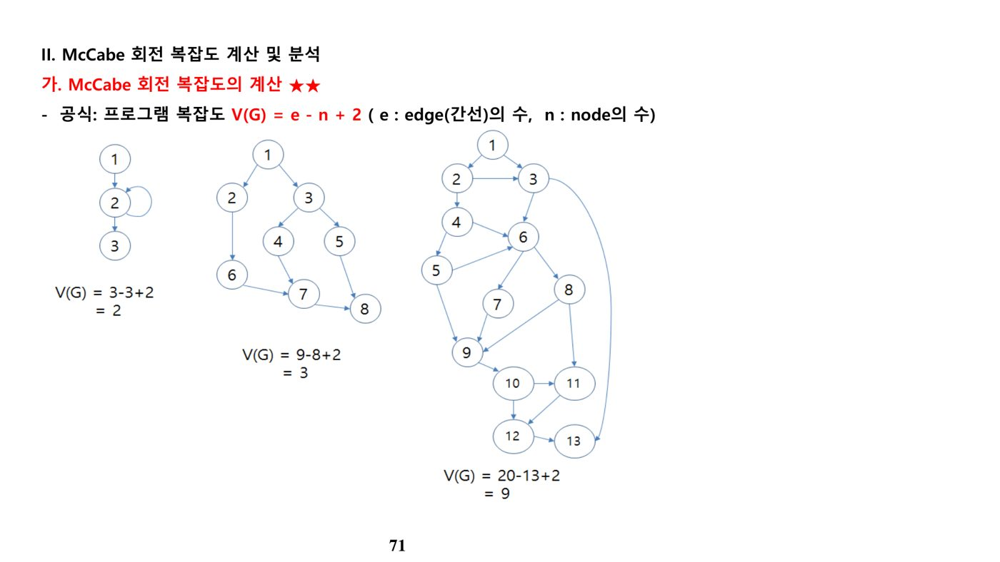
다. 복잡도 값의 의미
| 복잡도 기준 | 분석 내용 |
|---|---|
| 5 이하 | 매우 간단한 프로그램 |
| 5~10 | 매우 구조적이며 안정된 프로그램 |
| 20 이상 | 문제 자체가 매우 복잡하거나, 구조가 필요 이상으로 복잡한 프로그램 |
📚 전체 기출·예상문제 (15문항) — 원문 수록
본 강좌 원본 PDF에 수록된 기출·예상문제를 빠짐없이 원문 그대로 정리했습니다. 정답·해설은 강의 원문 기준입니다.